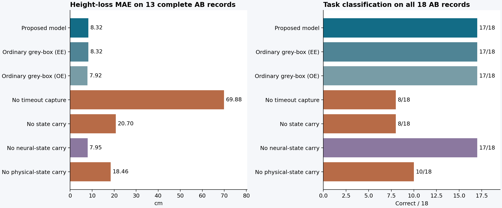

2026-10-28 · 本地既有数据 · 新飞行0 · SITL0 · Thor未使用
补上普通非线性灰箱后，独立贡献还剩什么？
当前实现与同信息的普通非线性灰箱等价。事件语义和跨事件状态对预测很重要，但这些能力由完整灰箱共同拥有。现有数据没有建立独立辨识、组合或地图更新算法的优势。
普通灰箱独立重写后，复现原方法的17/18成败判断与8.32 cm损高误差。常规64 ms多步输出误差拟合同样为17/18，损高误差7.92 cm。共享参数更新的预算收益也被普通灰箱复现。当前最可支持的成果是源码语义接线、状态记录与完整响应验证的工程整合，以及接入层现象的经验研究。
强基线的同等信息条件
- 辨识数据严格相同：18条P11正常／单事件完整轨迹，逐文件hash核对。AB、REPAIR和P13结果均未用于拟合。
- 模型结构相同：非线性推力方向、四个执行器滤波状态、10个有效动力学系数与相同参数边界。双方使用相同冻结GRU、目标事件源码、初始状态和时钟假设。
- 普通方程误差基线独立组装原始测量的回归矩阵，并独立实现机体积分器。其参数与原方法最大差为9.02e-17。源控制器有意共享，符合用户要求的同源码信息。
- 补充普通非线性输出误差基线：由相同数据形成4444个64 ms窗口，拟合速度和角速度端点，固定误差尺度与80次评估上限。已执行7次评估并正常收敛。窗口来自同18条记录，不增加独立样本。训练中使用实测动作，留出预测闭环运行控制器，未来动作不作为输入。
- 主评价保持原严格留出报告口径：18条P13 AB、各自事件前初值。敏感性评价使用已知NORMAL初值模板，并按最新预算报告的组合地图均值评分。
原方法已经实现了普通灰箱的上述模型和有界最小二乘估计器。独立重写和新增的输出误差优化用于检查这个等价关系；不把相同模型改名视作新的算法。多步拟合约0.40 cm的差异不支持在小样本上宣称稳定优越，但足以排除原方法在本比较中的独占收益。
完整强基线与固定参数消融
| 模型 | 成败判断正确 | 损高MAE | 倾角MAE | 漏判 / 误报 |
|---|
| 普通非线性灰箱：方程误差拟合 | 17/18 | 8.32 cm | 0.811° | 1 / 0 |
| 普通非线性灰箱：多步输出误差拟合 | 17/18 | 7.92 cm | 0.797° | 1 / 0 |
| 删除超时捕获语义，保持末次目标 | 8/18 | 69.88 cm | 17.296° | 10 / 0 |
| 删除跨事件状态继承 | 8/18 | 20.70 cm | 0.870° | 10 / 0 |
| 同时删除两项 | 8/18 | 70.50 cm | 17.727° | 10 / 0 |
| 只删除神经记忆继承 | 17/18 | 7.95 cm | 0.729° | 1 / 0 |
| 只删除机体与执行器状态继承 | 10/18 | 18.46 cm | 1.098° | 6 / 2 |
原方法：17/18，损高8.32 cm，倾角0.811°，漏判1、误报0。高度和倾角MAE均只使用固定13条完整记录；5条截断记录不作为精确峰值。所有变体在本评价中均没有数值失域。消融使用同一组完整数据辨识的参数，不按留出标签重新调整。

消融到底删了什么
- 删除超时捕获：仍知道消息断流的时段，保留控制器、动力学与时钟；接入层只保持最后收到的目标，删除超时后从当前预测状态捕获新目标的规则。这只检验该具体事件语义。
- 删除跨事件继承：在B开始前，用同初值、同时间的“没有A”预测状态替换当前后继。前缀已经发生的损高和峰值仍保留；没有读取实测B前状态。
- 只删除神经记忆继承：仅替换h、上一动作、历史均值和计数，保留物理与事件状态。
- 只删除物理继承：仅替换机体、执行器、待执行指令和观测缓存，保留控制器及事件状态。
这些删除是模型组件消融，未实际对飞行器实施状态重置。结果衡量模型对被删信息的依赖，不能直接当作真实系统的因果干预效果，也不能将删除后的弱模型当作同信息强基线。
删除超时捕获后，模型漏掉全部10条任务失败；删除完整状态继承也漏掉全部10条。两项对完整预测都有作用。普通灰箱连续推进状态并执行相同源码规则，自然获得相同收益。
只删除神经记忆继承仍为17/18，损高7.95 cm、倾角0.729°，本批指标没有下降；只删除物理继承降为10/18、18.46 cm。这说明在本批恢复间隔0.55–2 s的断流组合中，物理与执行器后继更敏感。消融作用存在相互依赖，不能将误差差值相加当作各状态的独立贡献；也不能推广到瞬时控制权切换。
具体案例：同一初值下的模型对照
截断案例只给出已见峰值下界。原方法与普通灰箱EE的预测在这里相同至数值精度。
使用NORMAL初值模板，结论是否改变
| 模型 | 成败判断正确 | 损高MAE | 倾角MAE | 漏判 / 误报 |
|---|
| 普通非线性灰箱：方程误差拟合 | 17/18 | 7.44 cm | 0.797° | 1 / 0 |
| 普通非线性灰箱：多步输出误差拟合 | 17/18 | 6.71 cm | 0.783° | 1 / 0 |
| 删除超时捕获语义，保持末次目标 | 8/18 | 70.00 cm | 17.344° | 10 / 0 |
| 删除跨事件状态继承 | 8/18 | 20.33 cm | 0.904° | 10 / 0 |
| 同时删除两项 | 8/18 | 70.63 cm | 17.780° | 10 / 0 |
| 只删除神经记忆继承 | 17/18 | 6.97 cm | 0.758° | 1 / 0 |
| 只删除机体与执行器状态继承 | 10/18 | 17.74 cm | 1.089° | 6 / 2 |
此表使用已知正常记录的初值模板，在同一组合内汇总预测，再评价18条固定历史结果，与顺序预算报告一致。它与主表的逐案例口径分别保留；本次没有通过更换口径选择有利结果。
普通灰箱是否也复制地图更新收益
额外独立重拟合上轮“短断流优先”路径：6条正常轨迹起步，依次加入F1-r1-A、F1-r1-B。每一步都不使用任何AB辨识数据，使用相同NORMAL初值模板预测全部AB。
| 新增轨迹数 | 已加入单事件 | 普通灰箱损高MAE | 原方法损高MAE | 普通灰箱任务正确 |
|---|
| 0 | 仅6条正常轨迹 | 53.26 cm | 53.26 cm | 16/18 |
| 1 | F1-r1-A | 5.71 cm | 5.71 cm | 16/18 |
| 2 | F1-r1-A, F1-r1-B | 6.36 cm | 6.36 cm | 17/18 |
普通灰箱同样在两条新增单事件轨迹后达到90%准确率和10 cm损高误差的联合指标。该路径已经在上轮被简单选择规则实现，本轮又确认共享参数更新也属于普通灰箱的能力。
研究结论
辨识算法：未发现独立新意；现有估计器与标准灰箱一致。事件组合：准确的源码事件规则和连续状态继承有用，但普通混合灰箱同样具备。地图更新：共享参数带来的跨组合改善被强基线复现。选测：本轮没有新增省预算证据，沿用上轮的否定性结论。
当前可保留的贡献是工程整合与经验发现：把可用源码、控制器记忆、执行器状态、参考事件和任务历史接成可运行模型，建立可复核的组合留出评价。若论文定位要求一种超过普通系统辨识的新核心方法，现有实现尚未达到这一要求。切换与跨平台仍是有意义的问题，但本轮未验证其方法优势，不能用尚未实施的复用主张补足当前新意。
完整性检查与复现
独立机体单步实现与原代码在50组固定随机状态的最大差1.78e-15；预测API只接收事件前输入，置换结果标签和未来B前记录不改变预测；所有状态继承消融在B前的整段轨迹保持一致；没有A时，删除继承操作与完整模型逐点相同。参数更新0、1、2步均独立重拟合并执行全部AB预测。
局限：方法设计已经接触过历史结果；18条数据只有6种组合；当前控制器时序与观测近似由双方共同继承。数值一致证明实现等价，不能证明真实世界模型精确。没有进行新飞行、SITL、切换或跨平台试验。
固定比较协议 · 辨识结果 · 全部预测与评分 · 等价核验 · 信息边界与更新核验 · 文件校验清单